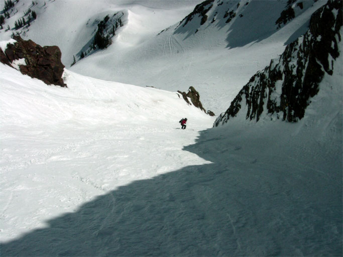

Joni is about 1/3 the way down the chute in this photo. It takes only a few minutes to ski down—not much skiing for about 50 mins. of hiking.
By the time I skied down, I had the chute to myself, but I didn't ski it well. I got hung up in the slush on the left side and had to stop a couple of times. About halfway down, I got my act together and skied the remainder (keeping on the right) like I knew how to ski.